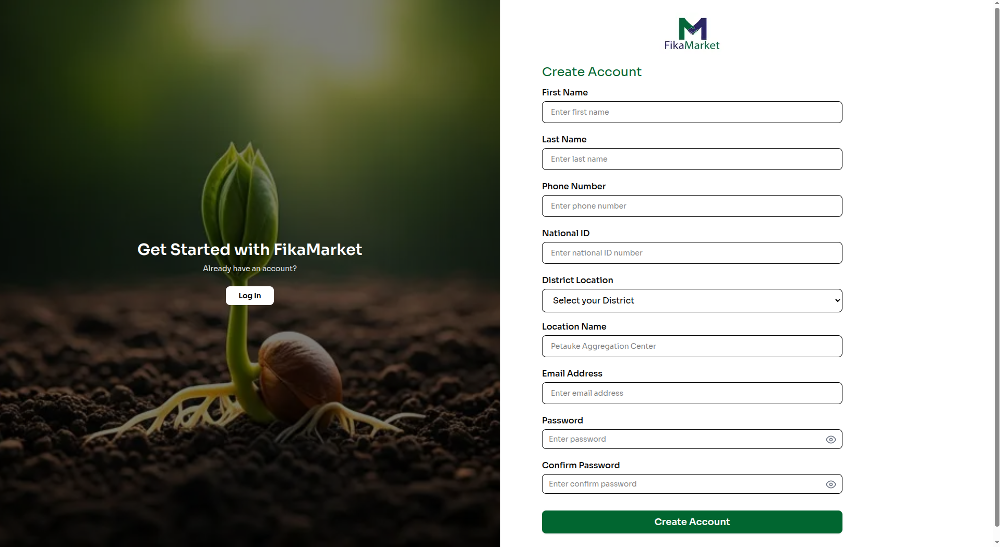
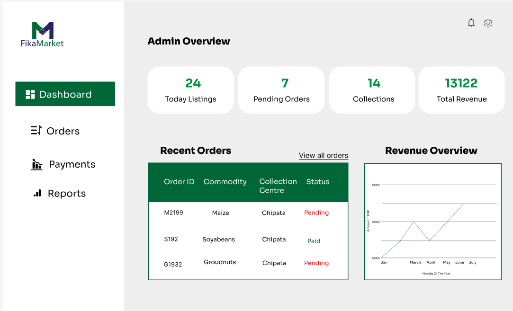

Frontend Web
Lead Farmer Dashboard
Introduction
The Lead Farmer Dashboard is the web client used by Lead Farmers to oversee collection points, monitor active buys and sells, and verify produce handovers. It is built with Next.js and React, and communicates with the FikaMarket API for all data operations.
The dashboard is optimized for desktop use, since Lead Farmers typically manage collection point activity from a fixed location rather than in the field.
Technology Stack
| Category | Technology | Purpose |
|---|---|---|
| Framework | Next.js 16.3.1 | React framework with App Router |
| UI Library | React / React-DOM 19.2.8 | Component rendering |
| Styling | Tailwind CSS / PostCSS ^4 | Utility-first CSS |
| Forms | React Hook Form | Form state and validation |
| Charts | Recharts | Revenue and order data visualization |
| Icons | Lucide React | Icon set |
| Typography | Roboto | Base font |
| Auth | JWT | Session and role verification |
| Formatting | ESLint + Prettier | Code quality and formatting |
| Hosting | Vercel | Production deployment |
Prerequisites
Before setting up the dashboard, ensure the following are installed
| Tool | Version | Purpose |
|---|---|---|
| Node.js | 18.x or later | JavaScript runtime |
| npm | 9.x or later | Package manager |
| Git | Latest | Version control |
Install Node.js on Linux
curl -fsSL https://deb.nodesource.com/setup_18.x | sudo -E bash -
sudo apt install -y nodejs
node --version
npm --version
Install Node.js on Windows
powershell -c "irm https://community.chocolatey.org/install.ps1%7Ciex"
choco install nodejs
node --version
npm --version
Install Node.js on macOS
brew install node
node --version
npm --version
Setup and Installation
1. Clone the repository
git clone https://github.com/your-organisation/fikamarket.git
cd fikamarket/frontend
2. Install dependencies
npm install
This installs Next.js, React, Tailwind CSS, React Hook Form, Recharts, and Lucide React. This may take a few minutes depending on your connection speed.
3. Configure environment variables
Create a .env.local file in the frontend/ directory:
# Required - backend API base URL
NEXT_PUBLIC_API_URL=https://your-backend-url/api/v1
4. Start the development server
npm run dev
UI Overview
Once the command is run, the first page you will see is the login and signup page, followed by the dashboard.
Login
Signup

Dashboard

This app is hosted at https://cipher-dashboard-ten.vercel.app .
package.json scripts
{
"name": "fikamarket_dashboard",
"version": "0.1.0",
"private": true,
"scripts": {
"dev": "next dev",
"build": "next build",
"start": "next start",
"lint": "eslint"
},
"dependencies": {
"lucide-react": "^1.31.0",
"next": "16.3.1",
"react": "19.2.8",
"react-dom": "19.2.8"
},
"devDependencies": {
"@tailwindcss/postcss": "^4",
"@types/node": "^20",
"@types/react": "^19",
"@types/react-dom": "^19",
"eslint": "^9",
"eslint-config-next": "16.3.1",
"tailwindcss": "^4",
"typescript": "^5"
}
}
Project Structure
fikamarket/
+-- app/
| +-- components/ Global reusable layout components and visual blocks
| +-- login/ Authentication logic and input forms
| | +-- page.js
| +-- signup/ User onboarding setup views
| | +-- page.js
| +-- dashboard/ Core analytical layout displaying Recharts blocks
| | +-- page.js
| +-- orders/ Fulfillment tables and processing lists
| | +-- page.js
| +-- payments/ Financial status sheets and transaction columns
| | +-- page.js
| | +-- page.module.css
| +-- reports/ Regional yield print sheets and metrics
| | +-- page.js
| +-- public/ Production-ready static image directories
| | +-- fikamarket_logo.png
| +-- global.css Root Tailwind styles
| +-- layout.js Top-level application layout wrapper
| +-- page.js Index entry route
| +-- page.module.css Page styling
+-- node_modules/
+-- .gitignore
+-- eslint.config.mjs
+-- next.config.ts
+-- package.json
+-- package lock.json
+-- postcss.config.mjs
+-- README.md
Coding Standards and Conventions
Naming conventions
| Element | Convention | Example |
|---|---|---|
| Components | PascalCase | ProduceCard.js |
| Functions & variables | camelCase | fetchData(), isLoading |
| Tailwind classes | lowercase | className="gap-4" |
| Files & pages | kebab-case | dashboard-charts |
| Constants | UPPER_SNAKE_CASE | BASE_URL |
File organization
| Folder | Purpose |
|---|---|
components/ |
Reusable UI components |
login/, signup/ |
Authentication and onboarding |
dashboard/ |
Marketplace overview and analytics |
orders/ |
Produce order management |
payments/ |
Transaction and payment records |
reports/ |
Purchase metrics and reports |
public/ |
Static asset storage |
global.css |
App wide style definitions |
Role-Based Routing
Access to the dashboard is scoped to a single role the lead_farmer role. On login, the frontend sends credentials to the FikaMarket API and receives a JWT. The role encoded in the token is checked before granting access to dashboard routes.
User Login
|
Authentication API
|
JWT returned
|
Decode user role
|
lead_farmer -> Dashboard access
Authentication Flow
The frontend sends login credentials to the FikaMarket API. On success, the API returns a JWT containing the user's role, token expiry, and user ID. The token is stored on the client side and it is used to authorize subsequent requests.
User
|
Enter credentials
|
Login Page
|
POST credentials
|
Authentication API
|
+----+----+
| |
Invalid Valid
| |
Error JWT Token
message |
Session Storage
|
Dashboard Access
Token storage
| Storage | Purpose |
|---|---|
| Cookies | On the server side auth for middleware protected routes |
| sessionStorage | Temporary session data |
| localStorage | Persists auth across page refreshes |
Auth helpers
login()
logout()
getToken()
isAuthenticated()
getCurrentUser()
getUserRole()
isTokenExpired()
export function isAuthenticated() {
const token = getToken();
return Boolean(token);
}
Token payload
{
"sub": "user-uuid",
"role": "lead_farmer",
"exp": 17645385500
}
| Field | Description |
|---|---|
sub |
Unique ID of the authenticated user |
role |
User's application role |
exp |
JWT expiration timestamp |
API Integration
Next.js API routes proxy requests to the FikaMarket backend, keeping the backend URL server side.
import { NextResponse } from 'next/server';
export async function POST(request) {
try {
const body = await request.json();
const backendUrl = process.env.NEXT_PUBLIC_API_URL;
const backendResponse = await fetch(`${backendUrl}/users/login`, {
method: 'POST',
headers: { 'Content-Type': 'application/json' },
body: JSON.stringify(body),
});
const data = await backendResponse.json();
return NextResponse.json(data, { status: backendResponse.status });
} catch (error) {
return NextResponse.json({ message: 'Internal Server Error' }, { status: 500 });
}
}
import { NextResponse } from 'next/server';
export async function POST(request) {
try {
const body = await request.json();
const backendUrl = process.env.NEXT_PUBLIC_API_URL;
const backendResponse = await fetch(`${backendUrl}/users/`, {
method: 'POST',
headers: { 'Content-Type': 'application/json' },
body: JSON.stringify(body),
});
const data = await backendResponse.json();
return NextResponse.json(data, { status: backendResponse.status });
} catch (error) {
return NextResponse.json({ message: 'Internal Server Error' }, { status: 500 });
}
}
frontend.md2 API client
A shared client wraps fetch calls with automatic auth header injection and consistent error handling, this ia so individual pages do not repeat that logic.
const API_BASE = process.env.NEXT_PUBLIC_API_URL || "";
function buildUrl(path) {
return `${API_BASE}${path}`;
}
function getAuthHeaders() {
const token =
typeof window !== "undefined" ? localStorage.getItem("fikamarket_token") : null;
const headers = { "Content-Type": "application/json" };
if (token) {
headers["Authorization"] = `Bearer ${token}`;
}
return headers;
}
export async function apiGet(path) {
const res = await fetch(buildUrl(path), { headers: getAuthHeaders() });
if (!res.ok) throw new Error(`Request failed (${res.status})`);
return res.json();
}
export async function apiPost(path, body) {
const res = await fetch(buildUrl(path), {
method: "POST",
headers: getAuthHeaders(),
body: JSON.stringify(body),
});
if (!res.ok) throw new Error(`Request failed (${res.status})`);
return res.json();
}
Service files
Requests are grouped by resource, this is so each file owns one part of the backend surface.
| File | Endpoint | Handles |
|---|---|---|
lib/api/listings.js |
/produce-listings/ |
Fetching and managing produce listings |
lib/api/orders.js |
/orders/ |
Order lookup and status updates |
lib/api/payments.js |
/payments/ |
Transaction records |
lib/api/collection-points.js |
/collection-points/ |
Collection point details |
import { apiGet, apiPost } from "./client";
export async function getOrders() {
return apiGet("/orders/");
}
export async function getOrderById(orderId) {
return apiGet(`/orders/${orderId}`);
}
export async function confirmHandover(orderId, data) {
return apiPost(`/orders/${orderId}/confirm`, data);
}
Login & Signup Pages
The login page collects the phone number and password, submits them to /api/login, stores the returned token, and redirects to /dashboard on success. An error message displays on failed attempts.
The signup page collects the Lead Farmer's name, email, phone, and assigned collection point, then submits to /api/signup. Password fields validate for minimum length before submission is allowed.
Forgot & Reset Password
The forgot password page collects an email address and requests a reset link from /api/users/forgot-password. On success, a confirmation message displays on the page, it does not reveal whether the email exists, to avoid leaking account information.
The reset password page reads a token from the URL query string, collects a new password with confirmation, and submits both to the backend for validation.
async function handleSubmit(email) {
const data = await apiPost("/users/forgot-password", { email });
return data.message || "Check your email for a reset link.";
}
Shared Components
Reusable pieces used across dashboard pages:
| Component | Purpose |
|---|---|
Button.js |
Primary/secondary/danger button variants with a loading state |
Input.js |
Labeled text input with inline error display |
LoadingScreen.js |
Full page loading overlay |
Sidebar.js |
Navigation for all desktop screens |
export default function Button({
children,
variant = "primary",
isLoading = false,
disabled,
...props
}) {
const variantStyles = {
primary: "bg-[#006838] hover:bg-[#004D29] text-white",
secondary: "bg-gray-200 hover:bg-gray-300 text-gray-800",
danger: "bg-red-600 hover:bg-red-700 text-white",
};
return (
<button
className={`rounded-lg px-4 py-2 font-semibold transition ${variantStyles[variant]}`}
disabled={disabled || isLoading}
{...props}
>
{isLoading ? "Loading..." : children}
</button>
);
}
Styling
Tailwind CSS is configured with FikaMarket's brand palette rather than the framework defaults.
module.exports = {
content: ["./app/**/*.{js,jsx}", "./components/**/*.{js,jsx}"],
theme: {
extend: {
colors: {
green: {
600: "#006838",
700: "#004D29",
},
navy: {
600: "#262262",
},
},
fontFamily: {
sans: ["Roboto", "system-ui", "sans-serif"],
},
},
},
};
| Token | Value | Usage |
|---|---|---|
| Primary | #006838 |
Buttons, active nav links |
| Primary Dark | #004d29 |
Hover states |
| Accent | #262262 |
Header bar, section dividers |
| Text Primary | #111827 |
Headings |
| Text Secondary | #6b7280 |
Body copy |
Charts
The dashboard/ page renders order and revenue trends using Recharts, pulling data from the orders and payments endpoints and rendering a responsive line/bar chart sized to the container.
Error Handling
API failures surface consistently: the shared client throws on a non OK response, and calling pages catch that error to show an inline message or retry button rather than a blank screen.
import React from "react";
export class ErrorBoundary extends React.Component {
constructor(props) {
super(props);
this.state = { hasError: false };
}
static getDerivedStateFromError() {
return { hasError: true };
}
render() {
if (this.state.hasError) {
return (
<div className="p-6 text-center">
<p className="text-gray-600">Something went wrong, try again later.</p>
<button
onClick={() => window.location.reload()}
className="mt-4 rounded-lg bg-[#006838] px-4 py-2 text-white"
>
Reload
</button>
</div>
);
}
return this.props.children;
}
}
**Regression checks**
Before each release, existing flows are reverified against a fixed checklist rather than testing everything from scratch. High risk areas such as (auth, order confirmation, payments) get checked on every merge, the full checklist runs once per sprint before deployment.
| Cycle | When | Coverage |
|---|---|---|
| Per merges | Every push to a shared branch | For high risk paths only |
| Sprint | End of sprint | Full checklist |
| Release | Before production deploy | Full checklist & sign off |
**Bug report format**
```markdown
## Bug Report
**Title:** [short summary]
**Severity:** Low / Medium / High / Critical
**Steps to Reproduce:**
1. ...
2. ...
**Expected:** ...
**Actual:** ...
**Environment:** browser/device, OS
**Logs:** ...
Deployment
The dashboard is deployed on Vercel, which builds automatically from the main branch and generates a preview build for each pull request.
{
"buildCommand": "npm run build",
"outputDirectory": ".next",
"installCommand": "npm install",
"framework": "nextjs",
"env": {
"NEXT_PUBLIC_API_URL": "https://your-backend-url/api/v1"
}
}
Environment variables are set in the Vercel project dashboard, not committed to the repo:
| Variable | Purpose |
|---|---|
NEXT_PUBLIC_API_URL |
Backend API base URL |
NEXTAUTH_SECRET |
Auth token signing secret |
Manual deploy commands
vercel --prod # Deploy to production
vercel # Deploy a preview
vercel logs # View deployment logs
CI/CD
A GitHub Actions workflow runs lint and tests on every push and pull request touching the frontend/ folder, blocking the merge if checks fail.
name: Deploy Frontend
on:
push:
branches: [main]
paths: ["frontend/**"]
pull_request:
branches: [main]
paths: ["frontend/**"]
jobs:
test:
runs-on: ubuntu-latest
steps:
- uses: actions/checkout@v3
- uses: actions/setup-node@v3
with:
node-version: 18
- run: npm install
working-directory: frontend
- run: npm run lint
working-directory: frontend
Performance Optimization
Route-based code splitting - Next.js only ships the JavaScript needed for the page being viewed, keeping initial load small.
Image handling - the built-in Image component serves optimized, appropriately sized images automatically.
import Image from "next/image";
export default function ProduceThumbnail() {
return (
<Image
src="/images/maize.jpg"
alt="Groundnuts (Shelled) listing"
width={800}
height={400}
className="rounded-lg"
/>
);
}
Deferred loading
import dynamic from "next/dynamic";
const RevenueChart = dynamic(() => import("@/components/RevenueChart"), {
ssr: false,
loading: () => <p className="text-gray-500">Loading chart...</p>,
});
Security
Response headers
const securityHeaders = [
{ key: "Content-Security-Policy", value: "default-src \'self\'" },
{ key: "X-Content-Type-Options", value: "nosniff" },
{ key: "X-Frame-Options", value: "DENY" },
{ key: "Referrer-Policy", value: "strict-origin-when-cross-origin" },
];
Input handling
import DOMPurify from "dompurify";
export function sanitizeHTML(html) {
return DOMPurify.sanitize(html, {
ALLOWED_TAGS: ["b", "i", "em", "strong", "p", "br"],
ALLOWED_ATTR: [],
});
}
Troubleshooting
| Problem | Likely cause | Fix |
|---|---|---|
ECONNREFUSED 127.0.0.1:3000 |
Dev server is not running | Run npm run dev |
| Build fails on type errors | TypeScript/JS errors in code | Run npm run lint and fix reported issues |
NEXT_PUBLIC_API_URL is not defined |
Missing env var | Add it to .env.local |
| CORS errors in development | Backend not allowing the frontend origin | Configure CORS on the backend, or route through a Next.js API proxy |
| Stale build output | Cached .next build |
Clear the build cache (below) |
Clear the build cache
rm -rf .next